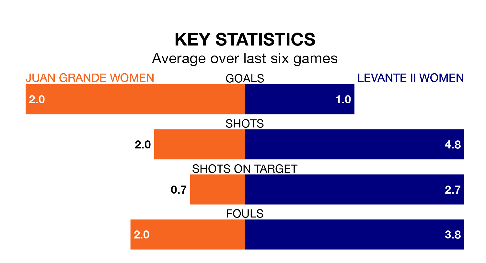

Juan Grande Women host Levante II Women on Saturday lunchtime on the back of four consecutive wins in Segunda Federación Femenina.
Juan Grande have picked up 12 points from their last six games, and they face a Levante II side who have lost their last two matches, and collected seven points from the last possible 18.
With 27 goals in 17 games so far this season, Juan Grande are scoring more than average in the league with 1.6 goals per game. And they are conceding fewer than average, letting in 14 goals at a rate of 0.8 per game.
Levante II are also above average scorers, with 1.6 goals per game, compared to a league average of 1.3. They have conceded 1.4 goals per game.
The away side are 11th in the table after 17 games, of which they have won eight and drawn three, earning 27 points.
The hosts are two places ahead of Levante II in ninth, with nine wins and four draws putting them on 31 points.
Juan Grande's last match was on Sunday, a 5-0 win against Guiniguada Apolinario Women, with getting the goals for Juan Grande.
Levante II lost 3-0 against Fundación Tenerife Women last time out, on January 20.
Updated: 08:51 (UTC), 25/01/24